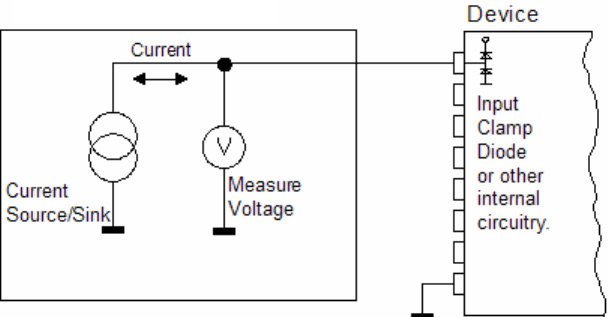

Continuity
This test method checks for continuity of the test signal paths and checks for short circuits.
It can be executed for single polarity or both polarities:
- using PPMU (parallel test),
- using DCScale pins in SIG mode
- using DCScale pins in DPS mode
- using DPS pins
All the methods can detect the open-circuits and the short-circuits between the measured pin and ground. The short circuits between pins can be detected when you do the measurement in serial mode.
This test method supports test table. But you need to enter the test names manually in the parameter. You can use both test table and testflow limits in a testflow. The test table has higher priority than testflow limits. If a test name used in the test flow is defined in both test table and testflow limits, the value defined in the test table will be used.
Continuity test using PPMU and DCScale pin in PMU mode

This test is used to:
- check the chip bonding and connections to the test fixture,
- check protection circuits in the DUT such as input clamp diodes by forcing a current into a device pin and measuring the voltage between that pin and ground,
- check for short-circuits.
Use the both polarities test if both input clamp diodes are present in the DUT, use the single polarity test if only one diode is present. In the latter case you must correctly specify the current direction.
Prior to execution of the test, the status of the test system is checked to determine if it is currently connected or disconnected. If it is connected, then the DISCONNECT() is executed. If it is already disconnected, then the continuity test method continues.
Each pin specified in the pin list is then connected to the respective PPMU, which forces a test current into it and measures the voltage between the pin and ground. The test is passed if the measured voltage is in the range of the pass limit.
When there is an internal DUT connection between the DUT pin and ground, the voltage detected is the forward bias voltage of the internal device protection diode.
If there is no internal connection between pin and ground, the result voltage will equal the voltage rail of the PPMU because the PPMU cannot force/sink the current specified. If the result is 0V, then a short circuit has been detected.
In case of bipolarities test, positive and negative tests always are measured. The overall test result is consolidated together. The end state for the test is disconnected.
If you want to get a result for the negative polarity even if the positive polarity test fails, you must execute the Continuity test method separately with two single polarity tests.
For PPMU parallel test, if the test is on Pin Scale system, the PPMU clamp voltages will be set to +/-0.1 V.
If the test is on P/C/Ce system, the precharge voltage will be set to 0 V or disabled according to the related parameter.
Continuity test with DPS pins or DCScale pins in DPS mode
Both parallel measurement and serial measurement are supported to do continuity test on DPS pins.
In parallel measurement, force voltage to all DPS pins with the specified value and then measure the current on the DPS pins. In serial measurement, one DPS pin is measured at one time. The other DPS pins are grounded.
If the measured current is 0, then the DPS pin is open. If the measured current is larger than the specified limit, the DPS pin is short to the ground.
Limits
If you define new test names in the parameter testName, you need to add limits to the test suite with the same test name. (Refer to Adding a limit in the Properties view and Adding a limit on the Tests page.)
Implementation pseudo code
IF not already disconnected THEN
disconnect from DUT
ENDIF
Switch DPS state to LOZ
IF PPMU measurement THEN
Set up PPMU voltage measurement conditions
ENDIF
IF SPMU measurement THEN
Setup SPMU voltage measurement conditions
ENDIF
IF PinScale test system THEN
IF DCScale SIG pin used THEN
Set up DCScale SIG pin measurement conditions
ENDIF
ENDIF
Execute PPMU/SPMU/DCScale SIG pin measurement in parallel
IF MCX PMU measurement THEN
Set up measurement conditions
Execute the measurement with MCX PMU
ENDIF
IF PinScale test system THEN
IF DCScale DPS mode THEN
Set up measurement conditions
Execute the measurement with DCScale DPS pin
ENDIF
ENDIF
IF DPS measurement done THEN
Set up measurement conditions
Execute the measurement
ENDIF
IF PPMU measurement done THEN
retrieve test result
ENDIF
IF SPMU measurement done THEN
retrieve test result
ENDIF
IF PinScale test system THEN
IF DCScale SIG mode measurement done THEN
retrieve the measurement result
ENDIF
ENDIF
Disconnect all relays
Set the sequencer state to OFF
Restore DPS state
Judge and log the test resultsFunctional changes
- Introduced in SmarTest 6.5.4
- SmarTest 7.1.1: Mixed usage of test table and testflow limits in one testflow is supported in TML 2.1.1.
- SmarTest 7.1.3: Supports measuring PS1600 high voltage pins with PPMU in TML 2.1.5.
- SmarTest 7.2.1: New option ShowFailOnly for the parameter output in TML 2.2.0.